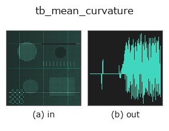

typed op• Datenarten: points → signal
• Aufruf: fullseye.apply(img, "tb_mean_curvature", a=0.5, b=0.5) (das 2-D-Modell ist ein Bild plus zwei skalare Regler a,b∈[0,1])

*Die Abbildung ist die tatsächliche Ausgabe auf einer synthetischen 128×128-Eingabe. Links Eingabe, rechts Ausgabe. Punktwolken als Draufsicht-Streudiagramm (Helligkeit = z), 1-D-Reihen als Linie, Volumen als Maximum-Projektion entlang z, Videos als mittleres Bild, komplexe Bilder als Betrag; Rückgabewerte, die kein Bild ergeben, werden als Werte gezeigt.*
Regler a durchfahren (0,1 / 0,5 / 0,9, der andere Regler auf Standard):
▸ tb_mean_curvature: Regler a durchfahren (Doku-Website)
*Regler b ändert die Ausgabe nicht (gemessen: identisch bei 0,1 / 0,5 / 0,9).*
Stufen (die vorangehenden Ops → dieser Op, von links nach rechts):
▸ tb_mean_curvature: Stufen (Doku-Website)
Auf anderen Bildern (synthetische Szene / Foto / Münzen. Obere Reihe: Eingaben, untere Reihe: deren Ausgaben. Regler auf Standard):
▸ tb_mean_curvature: andere Eingaben (Doku-Website)
Mittlere Krümmung H=(k1+k2)/2. → (N,). Eine orientierungsabhängige Größe.
Ohne normals (orientierte Referenznormalen, (N,3)) wird eine Heuristik der konvexen Seite verwendet (das Konkav/Konvex-Vorzeichen einer offenen Fläche ist unbestimmt). Mit orientierten Normalen richtet es sich nach der globalen Orientierung und liefert das korrekte Vorzeichen.
Ergänzung:
• Die Berechnung ist dieselbe wie bei principal_curvatures (PCA-Normale der k+1-Nachbarschaft + lokaler Quadrik-Fit) und gibt (k1 + k2) / 2 zurück. Einheit 1/Länge.
• Die Vorzeichenkonvention zählt konvex als positiv; globalem Konkav/Konvex entspricht es nur, wenn normals übergeben wird. Ohne sie liegt H einer offenen Fläche immer auf der konvexen Seite (entspricht dem Absolutwert).
• Punkte mit weniger als 5 Nachbarn erhalten 0. k wird auf N-1 gekürzt.
• Eine Kugel mit Radius R ergibt 1/R, ein Zylinder 1/(2R), eine Ebene 0. Ein Sattelpunkt (k1 = -k2) ergibt ebenfalls 0, aber gaussian_curvature ist dort negativ, sodass sie sich unterscheiden lassen.
• normals muss (N,3), endlich und mit Zeilen ungleich null sein (ValueError). Deterministisch.
Die in die 2-D-Evolutionsregistrierung überbrückte 3d-op mean_curvature. Die Implementierung ist dieselbe, nur die Aufrufkonvention ist an op(v, a, b) angepasst. a variiert k (Standard 25). b wird nicht verwendet.
• Katalog der Beispieldaten (Download-URLs / Lizenzen) — 2-D nutzt skimage.data (BSD/Public Domain) plus synthetische Bilder, 3-D nennt Download-URLs echter Datenquellen (Stanford, PDS, …).
• Herkunft und Literatur der Operatoren — die Quellen der Forschung/Verfahren, auf denen diese Operatorfamilie beruht.
Das Programm unten ist nachweislich lauffähig (gleiche Eingabe wie die Abbildung). In der Studio-Hilfe wird dieser Block zu Schaltflächen, die es sofort laden und ausführen.
img_to_points 0.50 0.50 tb_mean_curvature 0.50 0.50
▸ Diese Pipeline laden · Laden & ausführen
Die folgenden Beispiele rufen den zugrunde liegenden Ledger-Op mean_curvature auf. Dieser Brücken-Op ist dieselbe Implementierung, angepasst an die Konvention fn(v, a, b); das Verhalten gilt unverändert (nur die Aufrufform unterscheidet sich).
• curvature_shape_index — py -3.11 examples_3d/curvature_shape_index.py
• minimal_surfaces — py -3.11 examples_3d/minimal_surfaces.py
signal als Eingabe)identity · tb_create_funct_1d_array · tb_smooth_funct_1d_gauss · tb_smooth_funct_1d_mean · tb_derivate_funct_1d · tb_integrate_funct_1d · tb_zero_crossings_funct_1d · tb_abs_funct_1d
typed)tb_points_to_voxel · tb_estimate_point_normals · tb_iss_keypoints · tb_project_points · tb_render_point_depth · tb_statistical_outlier_removal · tb_radius_outlier_removal · tb_voxel_grid_downsample
*Provenance: ops.py — 2D Operator-Registry. Diese Notiz wird von tools/opdocs.py md erzeugt (nicht von Hand bearbeiten).*
© 2026 Kazufumi Furuse — Fullseye operator documentation. Licensed under Apache-2.0.